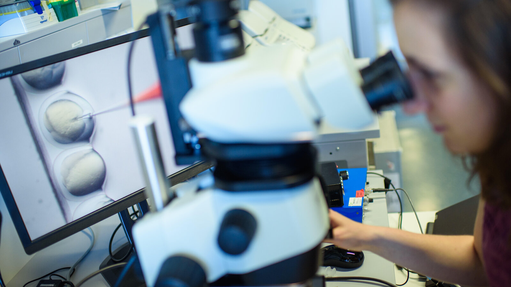
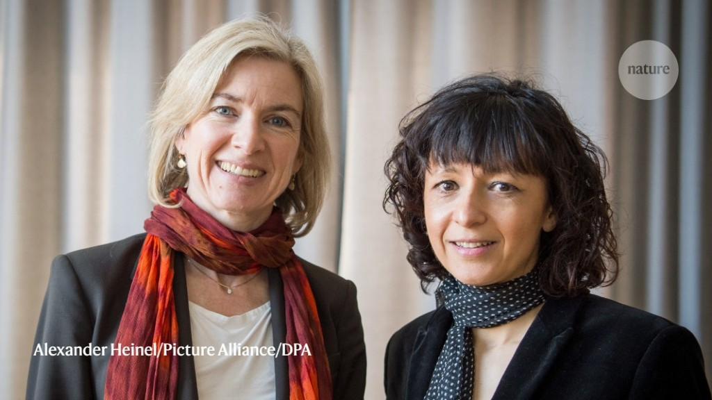
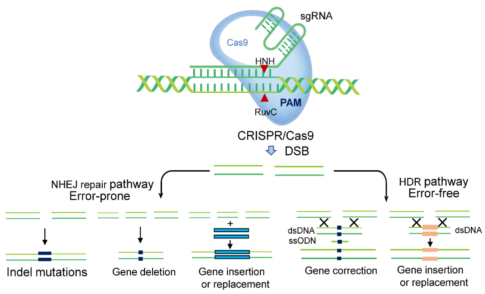

CRISPR-Cas9 is a groundbreaking gene-editing technology that utilizes the CRISPR system and Cas9 enzyme to make precise changes to DNA. Its implications are vast and span various fields. In medicine, CRISPR-Cas9 shows promise for treating genetic disorders, revolutionizing disease management, and enabling targeted cancer therapies. In agriculture, it offers opportunities to enhance crop yields, improve nutrition, and increase resistance to pests and diseases. The technology also finds applications in animal research, facilitating the study of genetic diseases and aiding in the development of new therapies. However, ethical considerations surrounding gene editing, such as altering the human germline and its impact on future generations, are subjects of ongoing debate. Additionally, legal battles over patent rights and the establishment of regulatory frameworks highlight the need for responsible and ethical use of CRISPR-Cas9. With its immense potential, careful consideration of ethical, legal, and social implications is crucial to ensure the responsible application of this powerful gene-editing tool.

Researchers looking at CRISPR

DNA, which CRISPR can edit.

The creators of CRISPR, Emmanuelle Charpentier and Jennifer Doudna

How CRISPR works to edit DNA.